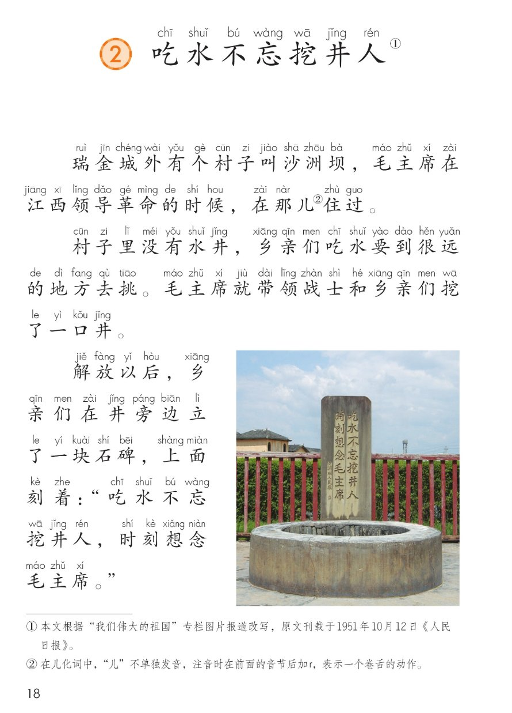
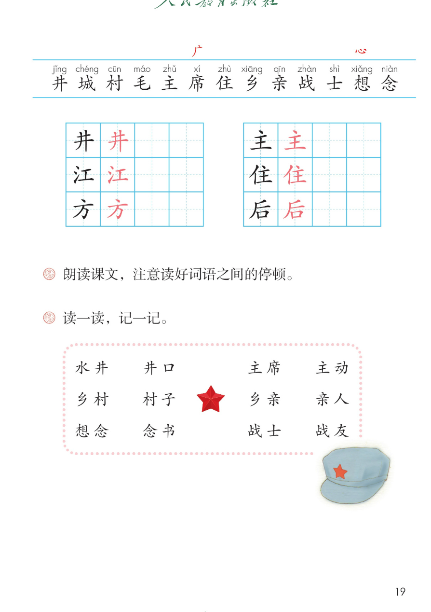

×
🔊 手机听不到声音怎么办？
① 先把手机
媒体音量调大 ，确认没开静音、没连蓝牙耳机；在微信里打开的，点右上角「⋯ → 用浏览器打开」。
② 还是没声音？到应用商店免费下载
Microsoft Edge 浏览器 （它自带朗读发声），用它打开本页面就能出声。
③ 换了 Edge 仍然没声音，说明这部手机的
硬件/系统不支持 网页朗读（多为老旧机型）；近几年买的新手机一般都能正常播放。
→ 打开声音自检
统编版 · 一年级下册 · 第二单元 · 阅读 · 第2课
第2课 吃水不忘挖井人
吃水不忘挖井人，时刻想念毛主席。
短文点读 跟读理解 听写造句 深入理解 8 题 闯关 8 题
这一课学什么：读一个真实的故事 。沙洲坝没有水井，毛主席就带领大家挖了一口井。后来大家立碑纪念——吃水不忘挖井人，时刻想念毛主席 。认识 13 个字 ，写好 6 个字 ，还要读好词语之间的停顿。🪣
课本第 18~19 页 点哪句读哪句
朗读要求： 不添字、不漏字；注意读好词语之间的停顿 ，例如「瑞金城外 / 有个村子 / 叫沙洲坝」一句里要按词断开；读到石碑上的话，要读得认真、带一点尊敬。
🎵 全文连读
🔁 跟读模式（读完一句停一停）
注音只标本课要认、要写的字（首次出现处）；点底部「拼 拼音」可隐藏注音自测。
课本第 19 页识字条：井 城 村 毛 主 席 住 乡 亲 战 士 想 念 点一张读一张
识字条 · 照录课本
井 城 村 毛 主 席 住 乡 亲 战 士 想 念
课本第 19 页田字格（左列 井 江 方，右列 主 住 后） 先看田字格与书写提示，再动笔
笔画数、结构与书写提示为通用规范，供参考，以教材和字典为准 。
读两遍 → 写一写 → 报答案 → 听示范句
▶️ 开始听写（8 词）
🔁 再读一遍
👀 看答案
听写词取自课后「读一读，记一记」与课文核心词（配套练习设计，不超纲）
点卡片听「相同点 / 不一样在哪 / 各造一句」
意思相近的词 · 供参考，以教材和字典为准（配套辨析练习）
课本课后题照录 先想后看，答案会读给你听
照样子说一说 · 配套练习，答案不唯一
认知 → 理解 → 运用 → 拓展
先自己想一想，再点开听参考答案；带 🌈 的题答案不唯一
点题目听题，点选项判对错，答完自动算分
已经答 0 题，答对 0 题。
点图放大

第 18 页 · 课题与《吃水不忘挖井人》课文

第 19 页 · 识字条 · 田字格 · 课后「读一读，记一记」
教材原页截图照录；页面里的讲解、示范句、说话支架与练习题为配套设计，不冒充教材原文。